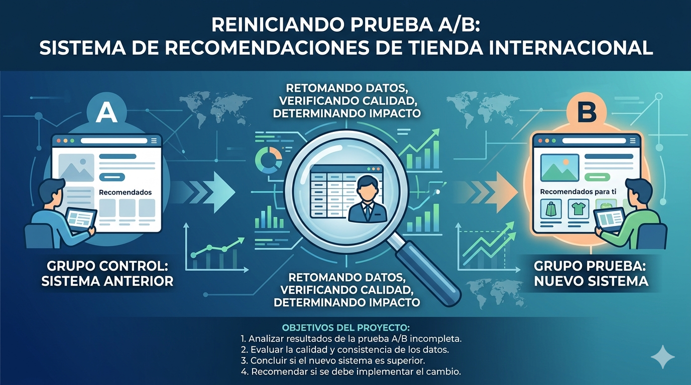
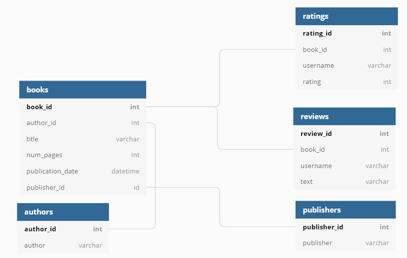

Analisis de datos para decisiones claras
Convierto datos complejos en analisis, experimentos e insights accionables.
Desarrollo proyectos end-to-end con Python, SQL y estadistica para detectar oportunidades, validar decisiones de producto y comunicar hallazgos con claridad.
Insight clave
Un buen analisis no solo muestra que paso: ayuda a decidir que hacer despues.
Sobre mi
Analisis con criterio de negocio y mirada en el detalle
Soy Carolina Rodriguez Guerra, analista de datos enfocada en transformar informacion compleja en hallazgos claros, utiles y accionables. Trabajo con Python, SQL y experimentacion para entender problemas reales, validar hipotesis y comunicar decisiones con evidencia.
Analisis exploratorio
SQL y bases de datos
Experimentacion A/B
Servicios
Soluciones de analitica listas para usar
Desde archivos desordenados hasta conclusiones accionables: el objetivo es que tus datos respondan preguntas reales del negocio.
Analisis exploratorio
Deteccion de patrones, anomalias, segmentos y oportunidades a partir de datos reales.
Limpieza y modelado
Preparacion de datos, validaciones, tablas relacionales y estructuras listas para analisis.
Experimentacion
Evaluacion de pruebas A/B, calidad del diseno experimental y significancia estadistica.
Insights y recomendaciones
Hallazgos explicados con foco en decision, impacto de negocio y siguientes acciones.
Portafolio
Proyectos seleccionados de GitHub
Una seleccion de proyectos propios orientados a analisis end-to-end, pruebas estadisticas y consultas SQL para responder preguntas de negocio.
End-to-end Analytics
Telecom Analytics: operadores ineficientes
Analisis operacional para CallMeMaybe con 1.092 operadores y mas de 50k registros. El proyecto identifica baja productividad saliente, problemas de atencion y casos criticos mediante KPIs, EDA e inferencia estadistica.
Ver proyecto
A/B Testing
Sistema de recomendaciones
Evaluacion de un nuevo sistema de recomendaciones para una tienda online. El analisis revisa calidad del experimento, embudo de conversion, desbalance regional, p-valores ajustados y decision de implementacion.
Ver proyecto
SQL Analytics
Plataforma de lectura post-pandemia
Analisis SQL de una base con libros, autores, editoriales, ratings y resenas. El proyecto extrae insights sobre contenido reciente, popularidad, satisfaccion, alianzas editoriales y usuarios de alto valor.
Ver proyectoMetodo
Trabajo con foco en impacto
Entender el objetivo
Definimos preguntas clave, metricas y decisiones que el analisis debe apoyar.
Preparar y validar
Limpio datos, reviso calidad, construyo variables y valido supuestos.
Explicar y recomendar
Comunico hallazgos, limitaciones y recomendaciones concretas para decidir.
Contacto
Tienes datos y necesitas convertirlos en decisiones?
Escribeme para hablar de analisis exploratorio, SQL, experimentacion, storytelling con datos o mejora de reportes actuales.